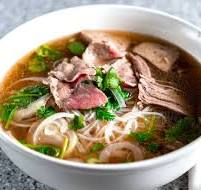

The normal recipe for Pho

Ingredients
- Beef bones
- Tough beeef cuts
- Flat rice noodles
- Ginger
- Onion
- Shallot
- Chili Grinds
- Star Alise
- Daikon
- Salt,sugar and fish sauce
- Steak
Steps
- Simmer and cook the broth for 4 hours with bone, add aromatics
- Charring onion and ginger
- After harsness is turned into sweetness, simmer it and extract the flavour
- Reheat the broth
- Assemble the bowls with noodles and steak